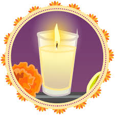
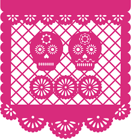

Elementos del altar de muertos
Cada uno de los siguientes elementos encierra su propia historia,
tradición, poesía y misterio.
- 1.- Agua
- Es la fuente de la vida, en el agua se ofrece a las ánimas para
mitigar su sed. Algunas culturas simbolizan el agua como pureza del alma
- 2.- Flores
- Son símbolo de festividad por sus colores y aromas. Adornan el
lugar durante la estancia del ánima
- 3.- Copal e incienso
- Fragancia de reverencia, que sublima la oración o alabanza. Se
utiliza para alejar los malos espíritus
- 4.- Velas o Veladoras
- La flama que producen significa "la luz", la fe, la esperanza. Es guía, con
su flama titilante para que las ánimas puedan llegar a sus antiguos lugares y
alumbrar el regreso a su morada. En varias comunidades indígenas cada vela
representa un difunto, el número de veladoras que tendrá el altar dependerá de
las almas que quiera recibir la familia.
- 5.- La Sal
- El elemento de purificación, sirve para que el cuerpo no se corrompa, en su
viaje de ida y vuelta para el siguiente año.
- 6.- El retrato
- Sugiere el ánima que nos visitará, pero este debe quedar escondido, de manera
que solo pueda verse con un espejo, para dar a entender que al ser querido se
le puede ver pero ya no existe.
- 7.- Las calaveras de azúcar
- Las medianas son alusión a la muerte siempre presente. Las calaveras chicas son dedicadas
a la Santísima Trinidad y la grande al Padre Eterno.
- 8.- El pan
- El ofrecimiento fraternal es el pan. La iglesia lo presenta como el "Cuerpo de Cristo",
es uno de los elementos mas preciados en el altar.

Altares de Muertos |
|
 |
|

Altar a Miki Matsubara |